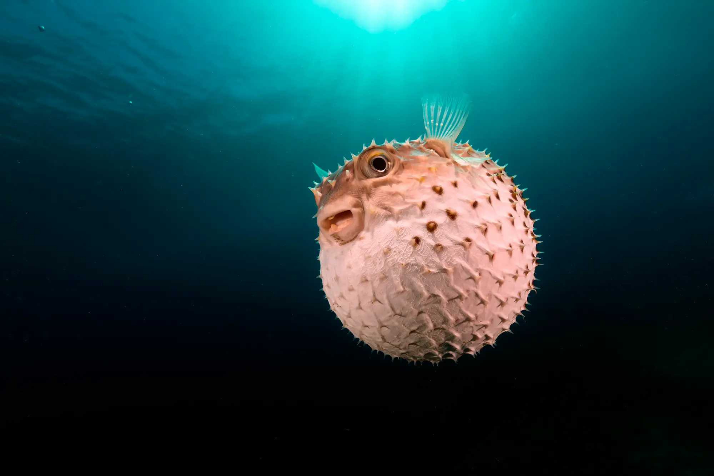

Was sind Salzwasserfische?
Salzwasserfische wurden nach ihrem Lebensraum benannt. Sie schwimmen durch die salzigen Gewässer der Erde.
Das bedeutet, dass ihre Heimat vor allem die Ozeane rund um den Globus sind. Es gibt allerdings auch
einige Seen im Landesinneren, die salziges Wasser enthalten und einen entsprechenden Fischbestand haben.
Ein Beispiel ist der Rudolfsee in Afrika.
Ihnen gegenüber stehen die Süßwasserfische, die vorwiegend in Flüssen und Seen zu finden sind.
Doch Arten wie Aal oder Lachs haben sich angepasst und können sowohl in Salz- als auch in Süßwasser leben.
Salzwasserfische sind aufgrund ihres Lebensraumes eine klassische Spezialität der Küstenregionen.
In der Regel werden sie von Fischkuttern oder größeren Trawlern mit Netzen gefangen.
Vereinzelt wirst du sogar noch Reusen in direkter Küstennähe finden. In Deutschland werden
Salzwasserfische in der Nord- und Ostsee gefangen. Fischarten aus anderen Meeren sind Importware.
10 bizarre Salzwasserfische:
1. Glaskopffisch
Der Glaskopffisch (Macropinna microstoma) wurde 1939 beschrieben, doch es dauerte 70 Jahre, bis Bruce Robison und seine Kollegen vom Monterey Bay Aquarium Research Institute das Rätsel um seine seltsamen zylinderförmigen Augen lösen konnten. Die Art lebt in 600 bis 800 Meter Tiefe, weshalb sie äußerst lichtempfindliche, grünliche Augen entwickelt hat. Diese liegen komplett im Inneren des Kopfes, von wo sie durch die transparente Kopfdecke meist nach oben schauen, um Schatten einer potenziellen Beute zu erspähen. Bisher ging man davon aus, dass diese Augen in der senkrechten Stellung fixiert sind. Die Aufnahmen der Forscher zeigten hingegen, dass sie doch beweglich sind und die Treffsicherheit beim Jagen erhöhen. Der Jäger liegt dabei unbeweglich im Wasser und starrt nach oben, bis er die Opfer – kleine Fische oder Quallen – über sich gesichtet hat. Dann dreht er seinen Körper nach oben und die Augen nach vorn. Nur so kann er mit seinem eher kleinen Mund die Beute sicher fangen. Die zwei Löcher über seinem Maul dagegen, die man auf den ersten Blick für Augen halten könnte, gehören zu seinem Riechorgan.
2. Geigenrochen
Ist es ein Hai? Oder ein Rochen? Beim Rundkopf-Geigenrochen (Rhina ancylostoma) ist die Frage nicht auf Anhieb zu beantworten: Der Fisch ist zwar recht flach, wie es typisch für Rochen ist. Doch besitzt er auch die markante Rückenflosse eines Hais. Trotz seines martialischen Aussehens ist er für Menschen völlig harmlos, denn er ernährt sich von Krebs- und Weichtieren, die er vom Boden wegschnappt. Geigenrochen sind stammesgeschichtlich sehr alt und entstanden wohl schon im Oberen Jura. Zu ihren engsten Verwandten gehören die Sägerochen, die eine bizarre sägeartige Schnauze besitzen. Damit erlegen sie nach neuesten Erkenntnissen ihre Beute und zerteilen sie. Leider gehören auch diese Rochenarten mittlerweile zu den gefährdeten Arten, weil sie wegen ihrer Flossen gejagt werden: Diese gelten in einigen asiatischen Ländern als Delikatesse.
3. Mondfisch
Der größte und schwerste Fisch überhaupt ist der Walhai (Rhincodon typus) – das dürften viele Menschen wissen. Doch wer ist eigentlich der schwerste Knochenfisch? Dieser Titel gebührt wohl dem Mondfisch (Mola mola), der gleichzeitig zu den unförmigsten Fischen zählen dürfte. Mehr als zwei Tonnen können die Tiere wiegen, deren lateinischer Name Mühlstein bedeutet. Sie fressen bevorzugt Quallen und Salpen, verschmähen aber auch kleine Fische und Plankton nicht. Umgekehrt wird er nur selten gezielt von Menschen gefangen, weil sein gummiartiges Fleisch als wenig schmackhaft gilt. Immer wieder verfangen sich die Giganten aber in Geisternetzen, die Fischer verloren haben und die anschließend durch die Weltmeere treiben. Sie kommen auch vor unseren Küsten vor; in die Ostsee verschlägt es sie jedoch nur durch Zufall, wenn starke Strömungen oder Stürme sie durch den Kattegat reißen. Im brackigen Ostseewasser finden sie zu wenig Nahrung, so dass sie meist schnell sterben.
4. Hornhecht
Hornhechte sind weder aggressiv noch giftig noch verfügen sie über ein großes Maul mit spitzen Zähnen, mit denen sie ihre Opfer zerfleischen könnten. Und doch können diese Fische Menschen gefährlich werden: durch ihre besondere Körperform. Sie besitzen einen schnabelartigen, verlängerten Kiefer, der sehr spitz zuläuft. Und da die Fische bevorzugt nahe der Wasseroberfläche schwimmen, kommt es immer wieder vor, dass sie im wahrsten Sinn des Wortes auf Schwimmer und Taucher treffen – und diese durchbohren. Dabei können die Spitzen auch noch innerhalb der Wunden abbrechen und so die Verletzung verschlimmern. In Einzelfällen starben sogar schon Opfer, weil ihr Herz getroffen wurde oder der Fisch mit seinem Kiefer über die Augenhöhle bis ins Gehirn vordrang. Gefahr droht dabei selbst auf Booten oder Surfbrettern, denn die Fische können mit Geschwindigkeiten von bis zu 60 Kilometern pro Stunde aus dem Wasser schnellen, wenn sie vor (vermeintlichen) Feinden flüchten wollen.
5. Steinfische
Sie sehen aus wie Steine und sind manchmal mit Algen bewachsen, so dass sie nahezu perfekt mit ihrer Umgebung auf dem Meeresboden verschmelzen. Auf ihre Tarnung allein verlassen sich Steinfische aber nicht: Sie gehören zu den giftigsten Meeresbewohnern , deren Toxin auch für Menschen tödlich wirken kann. Die Tiere besitzen eine Rückenflosse mit nadelspitzen Stacheln, die ein hochwirksames Nervengift injizieren, wenn man auf sie tritt. Das Gift lähmt den Atem und kann zu Herzstillstand führen; zudem zersetzt es das Gewebe rund um die Einstichstelle. Noch Monate später sind entsprechende Wunden nicht verheilt. Immerhin gibt es ein Gegenmittel, das jedoch nichts gegen den höllischen Schmerz ausrichtet, der bis zu 48 Stunden lang andauern kann. In Nord- und Ostsee muss man sie aber ohnehin nicht fürchten: Sie leben nur im indopazifischen Raum.

6. Roter Handfisch
Der Rote Handfisch (Thymichthys politus) gehört zu den seltensten Meeresbewohnern, welche die Wissenschaft kennt. Bis Mitte Januar 2018 wusste sie nur von einem einzigen Bestand in der Frederick Henry Bay vor der tasmanischen Südostküste. Dann jedoch entdeckte die Meeresbiologin Antonia Cooper von der University of Tasmania eines der Tiere, kurz bevor sie und ihre Kollegen einen Tauchgang abbrechen wollten. Experten bestätigten später, dass es sich um die besagte Art handelte – was für die Biologen eine große Erleichterung ist. Denn bislang umfasste die bekannte Weltpopulation maximal 20 bis 40 Tiere. Noch einmal so viele soll es an einem zweiten Standort geben. Seine genaue Position wird geheim gehalten, um Störungen zu verhindern. Handfische sind schlechte Schwimmer; sie bewegen sich vornehmlich auf ihren handähnlichen Flossen fort, so dass sie keine größeren Distanzen überbrücken können. Der Austausch zwischen zwei Beständen wird dadurch erschwert. Deshalb ist die Art durch menschliche Eingriffe sehr leicht zu gefährden.

7. Gelbflecken-Igelfisch
Um Feinde abzuwehren, gibt es im Tierreich verschiedene Strategien. Der Gelbflecken-Igelfisch (Cyclichthys spilostylus) setzt auf gleich drei Abwehrmaßnahmen: Er reichert Gift in seinem Körper an, kann kräftig zubeißen – und sich bei Gefahr aufpumpen, so dass ihn kaum ein Fressfeind mehr durch den Schlund bekommt, wenn er ihn verschlingen will. Die nahe verwandten Kugelfische sind dabei sogar als japanische Delikatesse namens Fugu bekannt, die aber nur durch spezialisierte Köche zubereitet werden darf: Bei Fehlern können die Konsumenten durchaus an der Speise sterben. Derartige Gefahren drohen beim Gelbflecken-Igelfisch nicht. Im Gegenteil: Er gilt als beliebtes Souvenir. Fischer präparieren die Art in aufgeblasenem Zustand und verkaufen sie an Reisende.
8. Zigarrenhai
Sie besitzen Furcht erregende Zähne und dürften so manchem Albträume bereiten. Dabei sind Zigarrenhaie (Isistius brasiliensis) maximal 50 Zentimeter lang und damit eher kleine Vertreter ihrer Verwandtschaftslinie. Die im Englischen als "cookiecutter sharks" bezeichneten Tiere machen diesem Namen allerdings alle Ehre: Wie Plätzchenausstecher stanzen sie Fleisch aus dem Körper größerer Fische oder Säugetiere. Charakteristische Bissspuren fanden sich beispielsweise an einem Weißen Hai, an Walen und Delfinen, Tunfischen und sogar schon an Unterwasserkabeln. In den 1970er Jahren mussten angeblich auch U-Boote der US-Marine zur Reparatur, weil die Haie Neoprenverschalungen von Sonarkuppeln beschädigt hatten. In mindestens einem Fall wurde ein Langstreckenschwimmer attackiert, der nachts vor Hawaii im Wasser unterwegs war; auch Schiffbrüchige mussten mit entsprechenden Wunden verarztet werden. Der Theorie nach saugen sich die Fische an ihrem Opfer fest und drehen sich dann im Kreis, wobei die rasiermesserscharfen Zähne das Fleisch heraussägen. Der verletzte Sportler bestätigte dies jedoch nicht – er habe keine derartige Bewegung und einen damit verbundenen Schmerz verspürt, so seine Aussage.

9. Riemenfisch
Nur wenige Menschen haben bislang einen lebenden Riemenfisch der Art Regalecus glesne gesehen. Das ist sehr schade. Die Tiere gehören zu den längsten Knochenfischen in den Weltmeeren, sie können eine Länge von acht und mehr Metern erreichen. Vielleicht sind sie sogar der Ursprung so manchen Seemannsgarns: Mit ihrem langen, schlanken Körper haben sie sich um Segelschiffe gewickelt und diese in die Tiefe gerissen, so die Mythen. Dabei sind die Fische völlig harmlos und leben im offenen Meer in Wassertiefen bis maximal 1000 Meter unter der Oberfläche. Die häufigsten Sichtungen betreffen Tiere, die nach Stürmen auf den Strand gespült wurden oder im Flachwasser geschwächt dümpeln. In Notzeiten werfen Riemenfische sogar ihren eigenen Schwanz ab, um zu überleben – obwohl er nicht nachwächst.
10. Riesenhai
Gut, der Riesenhai (Cetorhinus maximus) ist nach dem Walhai (Rhincodon typus) nur der zweitgrößte lebende Fisch, aber immerhin können wir ihm auch vor unseren Küsten begegnen: Der bis zu zehn Meter lange und vier Tonnen schwere Gigant schwimmt regelmäßig in der Nordsee und dem Mittelmeer, während Walhaie ausschließlich in tropischen Gewässern leben. Fürchten muss man sich vor dem Riesenhai trotz seines gigantischen Mauls nicht, denn die Art frisst einzig und allein Plankton. Knapp 2000 Tonnen Wasser pro Stunde filtert er, um seinen Tagesbedarf an 500 Liter Plankton pro Tag zu decken. Früher war die Art in unseren Breiten wohl deutlich häufiger. Doch allein vor der irischen Achill-Insel erlegten Fischer nach dem Zweiten Weltkrieg bis zum endgültigen Schutz der Tiere mehr als 12 000 Riesenhaie – vor allem Weibchen, die sich hier zur Fortpflanzung versammelt hatten. Von diesem Verlust haben sich die Haie im Nordostatlantik bis heute nicht richtig erholt.